- 한국에너지기술연구원은 천리안 위성 기반 전국 전일사량 데이터를 제공합니다.
- 천리안 1호 위성 데이터는 2012년 1월부터 2019년 12월까지,
- 천리안 2호 위성 데이터는 2019년 9월부터 2020년 8월까지 데이터를 제공합니다.
- 이 데이터 중 천리안 1호 데이터를 받아 분석합니다.
1. 데이터 다운로드
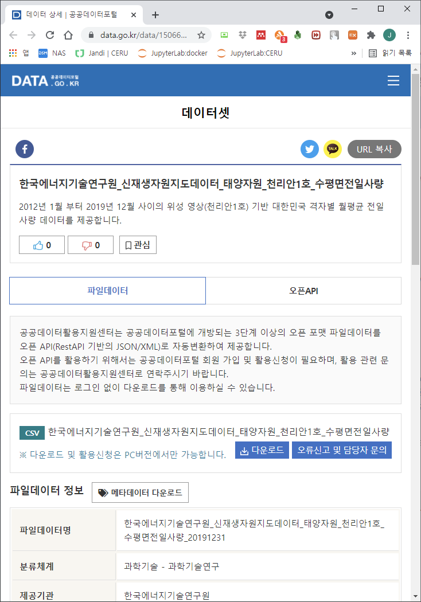
- 다운로드를 클릭하면 189 MB짜리 .csv 파일이 다운로드 됩니다.
- 파일 이름은
한국에너지기술연구원_신재생자원지도데이터_태양자원_천리안1호_수평면전일사량_20191231.csv입니다.
2. 데이터 분석
2.1. 기본 설정
- 주피터 노트북을 열고 기본 설정을 합니다.
1
2
3
4
5
6
7
8
9
10
11
12
13
14
15%matplotlib inline
import matplotlib.pyplot as plt
import seaborn as sns
import geopandas as gpd
import numpy as np
import pandas as pd
# 시각화 설정
sns.set_context("talk")
sns.set_style("white")
# 한글 사용 설정
plt.rcParams['font.family']=['NanumGothic', 'sans-serif']
plt.rcParams['axes.unicode_minus'] = False
2.2. 데이터 불러오기
작업폴더 아래
data폴더를 만들고 다운받은 파일을 넣습니다.pandas를 이용해 데이터를 불러옵니다.
1
2
3
4df = pd.read_csv("./data/한국에너지기술연구원_신재생자원지도데이터_태양자원_천리안1호_수평면전일사량_20191231.csv",
encoding="euc-kr") # 한글 인코딩
df.to_pickle("./data/KIER.pkl") # 백업
df.head()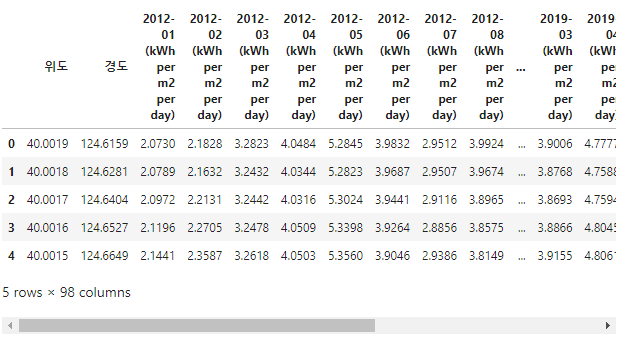
위도와 경도, 그리고 시간별 숫자가 있습니다.
위도와 경도는 지구상의 지점을 지칭하고 시간별 숫자는 월별 평균 일사량을 구합니다.
직진에 의해 태양으로부터 전달되는 일사량과 구름에 의해 산란된 값을 합친 값입니다.
산란된 일사량을 산란일사라고 하는데, 에너지기술연구원에서는 도메인 지식 기반으로 계산하여 추론합니다.
데이터 형상을 확인합니다.
1
df.shape
실행 결과
1
(291924, 98)
약 100개 가량의 열과 30만개 행으로 구성되어 있습니다.
98개 행은 12개월 x 8년 + 위도, 경도입니다.
3. 시간에 대한 변화
3.1. 광주광역시 데이터 추출
- 광주광역시의 좌표는 북위 35.1595º, 동경 126.8526º 입니다.
- 광주광역시와 가장 가까이 위치한 지점의 좌표를 탐색합니다.
- 위도와 경도 모두 가까워야 하므로 제곱의 합이 최소인 지점을 구합니다.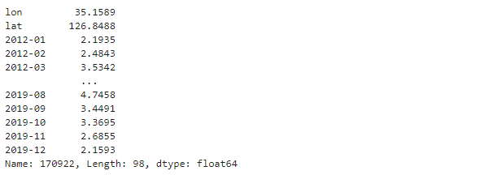
1
2
3# 광주광역시 위경도 : 35.1595° N, 126.8526° E
idx = np.argmin(np.power(df["lon"]-35.1595, 2) + np.power(df["lat"]-126.8526, 2))
df.iloc[idx]
시간에 대한 일사량을 확인하려면 시간과 일사량 데이터가 필요합니다.
월과 일사량 데이터를 가져옵니다.
1
2months = list(df.columns)[2:]
irrs = df.iloc[idx][2:]추출한 데이터를 그림으로 그립니다.
ax.set_title()명령으로 데이터 이름을 제목으로 붙입니다.1
2
3
4
5
6
7fig, ax = plt.subplots(figsize=(10, 4))
# 변화율 시각화
ax.plot(months, irrs)
# 제목 추가
ax.set_title("수평면 전일사량 [kWh/(m$^2 \cdot$day)]", pad=10)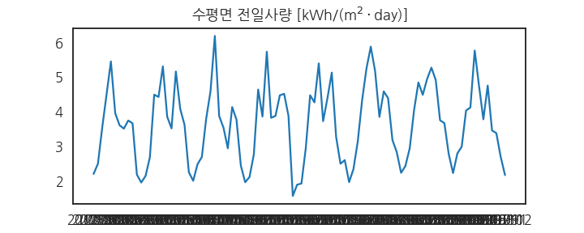
3.2. 범위 및 눈금 간격 지정
- x축 눈금이 빼곡하게 적혀서 보이지 않습니다.
MultipleLocator를 사용해서 1월 데이터에만 눈금을 답니다.ax.set_xlim()을 사용해서 x축 범위를 지정합니다.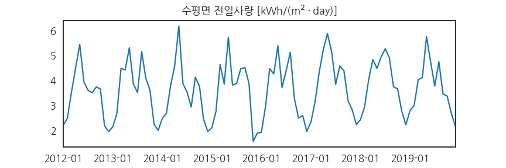1
2
3
4
5
6
7
8
9
10
11from matplotlib.ticker import MultipleLocator
fig, ax = plt.subplots(figsize=(12, 4))
ax.plot(months, irrs)
ax.set_title("수평면 전일사량 [kWh/(m$^2 \cdot$day)]", pad=10)
# x축 범위 지정
ax.set_xlim(0, len(months)-1)
# x축 눈금 간격 지정
ax.xaxis.set_major_locator(MultipleLocator(12))
3.3. 눈금 글자 크기 축소
- 글자를 조금 줄이면 좋을 것 같습니다.
- 일사량 데이터이므로 따뜻한 느낌을 주는 오렌지색으로 바꿉니다.
- 1월마다 눈금을 만들어 올립니다.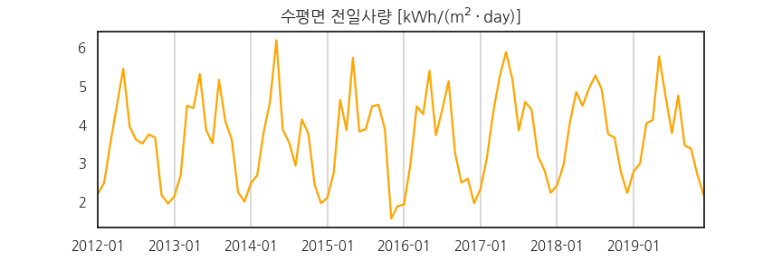
1
2
3
4
5
6
7
8
9
10
11
12
13from matplotlib.ticker import MultipleLocator
fig, ax = plt.subplots(figsize=(12, 4))
ax.plot(months, irrs, c="orange")
ax.set_title("수평면 전일사량 [kWh/(m$^2 \cdot$day)]", pad=10)
ax.set_xlim(0, len(months)-1)
ax.xaxis.set_major_locator(MultipleLocator(12))
# x축과 y축 눈금 글자 크기 축소
ax.tick_params(axis="both", labelsize="small")
# x축 눈금에서 grid 생성
ax.grid(axis="x")
3.4. 선 아래 채색
- 조금 심심하다 싶습니다.
ax.stackplot()명령을 사용해 선 아래를 색으로 칠합니다.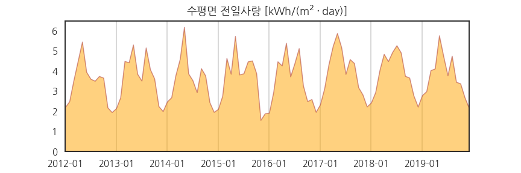1
2
3
4
5
6
7
8
9
10
11
12from matplotlib.ticker import MultipleLocator
fig, ax = plt.subplots(figsize=(12, 4))
# stackplot
ax.stackplot(months, irrs, colors="orange", ec="brown", alpha=0.5)
ax.set_title("수평면 전일사량 [kWh/(m$^2 \cdot$day)]", pad=10)
ax.set_xlim(0, len(months)-1)
ax.xaxis.set_major_locator(MultipleLocator(12))
ax.tick_params(axis="both", labelsize="small")
ax.grid(axis="x")
4. 공간 분포
4.1. 데이터 정돈
- 한반도를 포함한 주변 영역의 데이터를 2차원 공간에 그립시다.
- 데이터프레임 컬럼 이름이 너무 깁니다.
- 단위는 따로 적어두면 됩니다. 불필요한 부분을 제거합시다.
- 위도와 경도도 영어로 바꿉니다.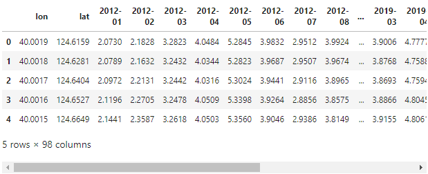
1
2
3
4cols = list(df.columns)
cols_short = ["lon", "lat"] + [c.split(" ")[0] for c in cols[2:]]
df.columns = cols_short
df.head()
4.2. scatter plot
2차원 공간에 데이터를 점으로 찍어서 그림을 그립니다.
2012년 1월 데이터만 그립니다.
1
2fig, ax = plt.subplots()
ax.scatter(df["lat"], df["lon"], c=df["2012-01"], cmap="inferno")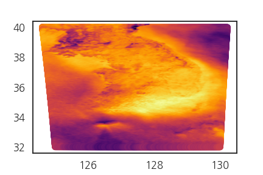
Matplotlib에서 제공하는 그림 크기가 가로가 길고 세로가 작아 짓눌린 모양입니다.
세로로 긴 도화지를 깔고 종횡비(aspect ratio)를 1:1로 맞춥니다.
실제 형상을 반영하기 위해서입니다.
1
2
3fig, ax = plt.subplots(figsize=(5, 6.67), constrained_layout=True)
ax.scatter(df["lat"], df["lon"], c=df["2012-01"], cmap="inferno")
ax.set_aspect("equal")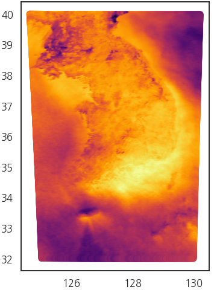
4.3. 좌표계 변환
위쪽이 넓고 아래가 좁은 모양입니다.
그림 아래와 왼쪽에 놓인 숫자는 경도와 위도입니다.
경도와 위도는 곡면상에 놓인 그림이기 때문에 이렇게 그리면 왜곡이 발생합니다.
pyproj라이브러리를 사용해 UTM-K 좌표계로 변경합니다.1
2
3
4
5from pyproj import Transformer
transformer = Transformer.from_crs("epsg:4326", "epsg:5178")
coord_UTMK = transformer.transform(df["lon"], df["lat"])
coord_UTMK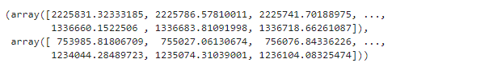
변환된 좌표계를 기존 데이터에 붙여 데이터프레임을 만듭니다.
1
2
3df_u = pd.DataFrame(data=np.array(coord_UTMK).T, columns=["y", "x"])
df_u = pd.concat([df_u, df.iloc[:, 2:]], axis=1)
df_u.head()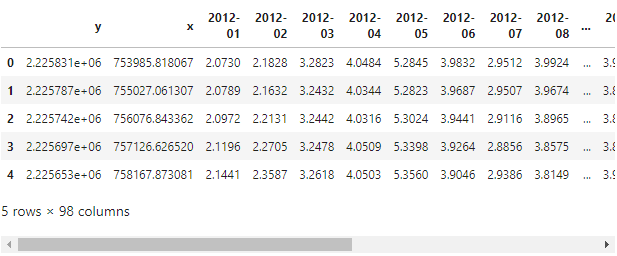
4.4. UTM-K 좌표계 scatter plot
변환된 좌표계를 사용해 scatter plot을 그립니다.
1
2
3fig, ax = plt.subplots(figsize=(5, 6.67), constrained_layout=True)
ax.scatter(df_u["x"], df_u["y"], c=df_u["2012-01"], cmap="inferno")
ax.set_aspect("equal")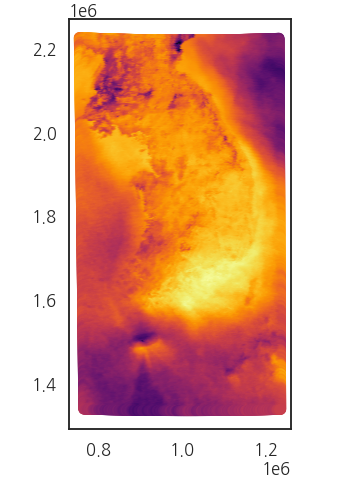
이제 그림이 정상적으로 보입니다.
경기 동북부~강원도 서부 지역을 확대해 봅시다.
1
2
3
4
5fig, ax = plt.subplots(figsize=(5, 6.67), constrained_layout=True)
ax.scatter(df_u["x"], df_u["y"], c=df_u["2012-01"], cmap="inferno")
ax.set_aspect("equal")
ax.set_xlim(1e6, 1e6+10000)
ax.set_ylim(2e6, 2e6+10000)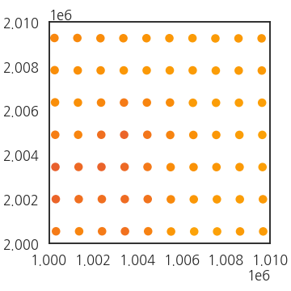
확대해보니 점만 가득합니다.
scatter plot이라 점만 찍어 그린 것입니다.
위쪽 그림을 보니 아래쪽에 굵은 펜이 지나간 듯한 흔적이 보이기도 합니다.
조금 더 넓게 봅니다.
1
2
3
4fig, ax = plt.subplots(figsize=(5, 6.7), constrained_layout=True)
ax.scatter(df_u["x"].iloc[:1000],
df_u["y"].iloc[:1000],
c=df_u["2012-01"].iloc[:1000], cmap="inferno")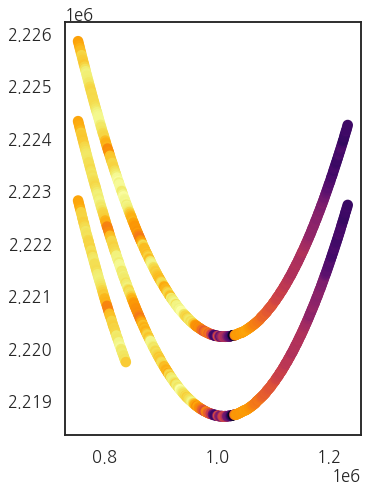
가로 세로도 맞지 않습니다.
원래 데이터도 좀 이랬고, 좌표 변환의 여파이기도 합니다.
4.5. 2D image 변환
- 이처럼 x와 y가 쌍으로 얽힌 데이터를 2D로 표현하는 가장 정석적인 방법은 meshgrid를 만드는 것입니다.
- 그러나 이는 x, y 데이터가 격자모양으로 예쁘게 정리되었을 때나 가능합니다.
- 위성 영상은 x, y 위치가 조금씩 틀어져있기 때문에 grid를 만들기 적절치 않습니다.
- 이럴 때
triplot,tricontourf,tricontour를 사용하기 좋습니다.
명령어의 기능을 확인하기 위해 30만개 데이터 중 100개만 추출합니다.
그리고 같은 데이터를 세 가지 명령을 사용해 그립니다.
1
2
3
4
5
6
7
8
9
10
11
12
13
14df_us = df_u.sample(100)
# visualize
fig, axs = plt.subplots(ncols=3, figsize=(9, 6.67), sharex=True, sharey=True, constrained_layout=True)
axs[0].triplot(df_us["x"], df_us["y"], lw=0.5)
axs[1].triplot(df_us["x"], df_us["y"], lw=0.5, c="w")
axs[2].triplot(df_us["x"], df_us["y"], lw=0.5, c="k", alpha=0.5)
axs[1].tricontourf(df_us["x"], df_us["y"], df_us["2012-01"], cmap="inferno", levels=5)
axs[2].tricontour(df_us["x"], df_us["y"], df_us["2012-01"], cmap="inferno", levels=5)
for ax, title in zip(axs, ["triplot", "tricontourf", "tricontour"]):
ax.set_aspect("equal")
ax.set_title(title, pad=20)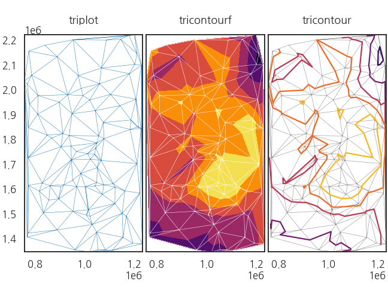
ax.triplot()은 주어진 (x, y) 데이터끼리 연결해 삼각형 mesh를 만듭니다.ax.tricontourf()는 (x, y) 위치데이터에 node의 값 데이터를 적용해 삼각형 내 interpolation을 합니다.levels=5로 지정했기 때문에 공간이 다섯 개의 색상 구간으로 나뉘었고 색상 사이 경계선이 보입니다.ax.tricontour()는 이 경계선에 contour line을 그립니다.
- 이 방식을 사용해 2D에 분포된 데이터를 그림으로 표현할 수 있습니다.
- 일사량 데이터를 보이는데
ax.triplot()은 의미가 없으니 나머지 둘만 그립니다. - level도 10개로 설정해 더 많은 구간을 표현합니다.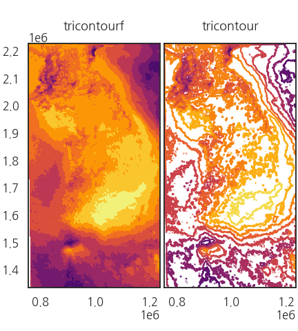
1
2
3
4
5
6
7
8fig, axs = plt.subplots(ncols=2, figsize=(6, 6.67), sharex=True, sharey=True, constrained_layout=True)
axs[0].tricontourf(df_u["x"], df_u["y"], df_u["2012-01"], cmap="inferno", levels=10)
axs[1].tricontour(df_u["x"], df_u["y"], df_u["2012-01"], cmap="inferno", levels=10)
for ax, title in zip(axs, ["tricontourf", "tricontour"]):
ax.set_aspect("equal")
ax.set_title(title, pad=20)
4.6. 지도 윤곽선 표시 (1) geopandas dataset
- geopandas 라이브러리에는 세계 지도와 주요 도시가 들어있습니다.
- 이를 활용해 한반도와 주변국의 윤곽선을 그립니다.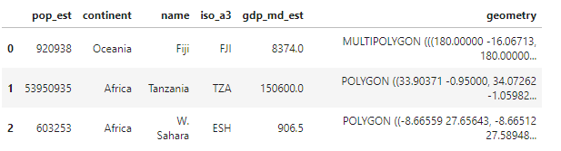
1
2
3
4
5
6
7import geopandas as gpd
world = gpd.read_file(gpd.datasets.get_path('naturalearth_lowres'))
cities = gpd.read_file(gpd.datasets.get_path('naturalearth_cities'))
# 국경 데이터
world.head(3)
1 | # 도시 데이터 |
공간을 마련하고 한반도와 서울을 표시합니다.
geopandas 자체 기능을 사용해 국경을 그립니다.
1
2
3fig, ax = plt.subplots()
world[world["name"] == "South Korea"].plot(ax=ax)
cities[cities["name"]=="Seoul"].plot(ax=ax, c="yellow")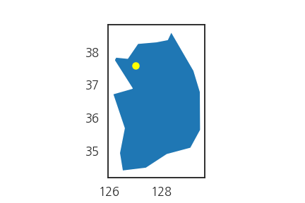
자, 그런데 x와 y축 눈금을 보면 위도와 경도입니다.
앞에서 우리는 UTM-K 좌표계로 데이터 전체를 변환했습니다.
역시 geopandas 자체 기능을 사용해 데이터를 변환하고 다시 그립니다.
1
2
3
4
5
6
7
8# 좌표계 변환
world = world.to_crs("EPSG:5178")
cities = cities.to_crs("EPSG:5178")
# 시각화
fig, ax = plt.subplots()
world[world["name"] == "South Korea"].plot(ax=ax)
cities[cities["name"]=="Seoul"].plot(ax=ax, c="yellow")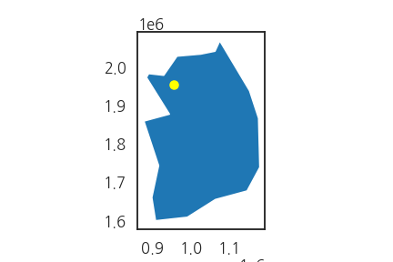
간편한 명령으로 손쉽게 좌표계가 변환되었습니다.
일사량 데이터와 겹쳐봅니다.
1
2
3
4
5
6
7
8
9
10
11fig, ax = plt.subplots(figsize=(5, 6.67), constrained_layout=True)
ax.tricontourf(df_u["x"], df_u["y"], df_u["2012-01"], cmap="inferno", levels=10)
ax.set_aspect("equal")
world[world["name"] == "South Korea"].plot(ax=ax, fc="none", ec="w")
world[world["name"] == "North Korea"].plot(ax=ax, fc="none", ec="w")
world[world["name"] == "Japan"].plot(ax=ax, fc="none", ec="w")
ax.set_xlim(df_u["x"].min(), df_u["x"].max())
ax.set_ylim(df_u["y"].min(), df_u["y"].max())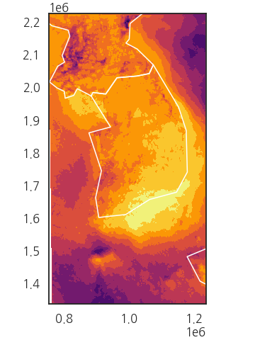
디테일이 영 아쉽습니다.
심지어 제주도도 없는데 혹시나 싶어 북한과 일본까지 다 끌어와도 그려지지 않습니다.
4.7. 지도 윤곽선 표시 (2) shape file
외부 저장소에서 시도 경계선 데이터를 가져옵니다.
geopandas.read_file()명령으로 열어 확인합니다.1
2df_shp = gpd.read_file("./CTPRVN_202101/TL_SCCO_CTPRVN.shp", encoding="euc-kr")
df_shp.head()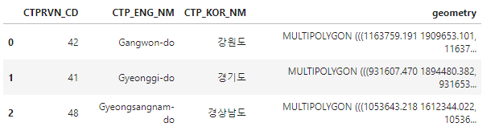
이번엔 그림으로 확인합니다.
특별시, 광역시, 도의 경계선이 선명하게 드러납니다.
1
2ax = df_shp.plot()
fig = ax.figure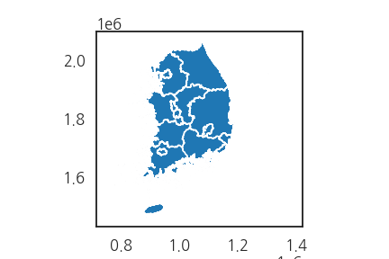
4.8. 일사량 데이터와 overlap
아까 살펴본 2012년 1월 데이터에 겹쳐봅니다.
1
2
3
4
5
6
7
8
9fig, ax = plt.subplots(figsize=(5, 6.67), constrained_layout=True)
ax.tricontourf(df_u["x"], df_u["y"], df_u["2012-01"], cmap="inferno", levels=10)
ax.set_aspect("equal")
df_shp.plot(ax=ax, fc="none", ec="w", lw=1, alpha=0.5)
ax.set_xlim(df_u["x"].min(), df_u["x"].max())
ax.set_ylim(df_u["y"].min(), df_u["y"].max())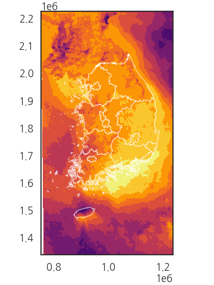
그럴싸합니다!
추운 겨울을 그려봤으니 6개월 지난 7월 그림을 그려봅니다.
1
2
3
4
5
6
7
8
9fig, ax = plt.subplots(figsize=(5, 6.67), constrained_layout=True)
ax.tricontourf(df_u["x"], df_u["y"], df_u["2012-07"], cmap="inferno", levels=10)
ax.set_aspect("equal")
df_shp.plot(ax=ax, fc="none", ec="w", lw=1, alpha=0.5)
ax.set_xlim(df_u["x"].min(), df_u["x"].max())
ax.set_ylim(df_u["y"].min(), df_u["y"].max())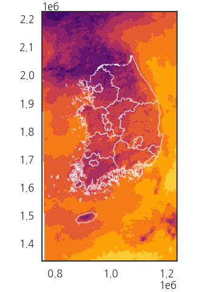
데이터가 바뀌어 색상 분포가 달라졌습니다.
그런데 뭔가 수상합니다.
1월 데이터는 아주 밝았는데 7월 데이터는 어두침침합니다.
여름 일사량이 겨울보다 적다는 게 정상일까요?
확인을 위해 각각 colorbar를 붙여봅니다.
1
2
3
4
5
6
7
8
9
10
11
12
13
14fig, axs = plt.subplots(ncols=2, figsize=(10, 6.67), constrained_layout=True, sharex=True, sharey=True)
im0 = axs[0].tricontourf(df_u["x"], df_u["y"], df_u["2012-01"], cmap="inferno", levels=10)
im1 = axs[1].tricontourf(df_u["x"], df_u["y"], df_u["2012-07"], cmap="inferno", levels=10)
for ax, im, month in zip(axs, [im0, im1], ["2012-01", "2012-07"]):
df_shp.plot(ax=ax, fc="none", ec="w", lw=1, alpha=0.5, zorder=2)
im = ax.tricontourf(df_u["x"], df_u["y"], df_u[month], cmap="inferno", levels=10)
ax.set_aspect("equal")
ax.set_title(month, pad=20)
ax.set_xlim(df_u["x"].min(), df_u["x"].max())
ax.set_ylim(df_u["y"].min(), df_u["y"].max())
plt.colorbar(im, ax=ax)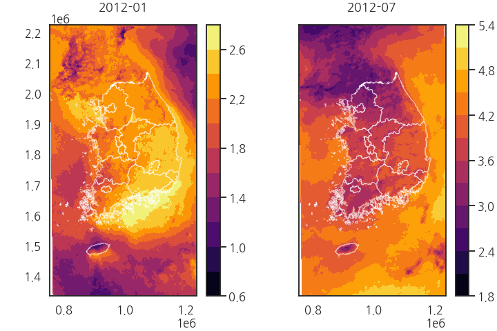
2월은 최대값이 3을 넘지 않는데 비해 7월은 5.4에 달합니다.
최소값도 0.6과 1.8로 큰 차이가 납니다.
두 그림이 다른 기준으로 그려져서 문제가 생긴 것입니다.
위 코드의 6번째 줄에 colormap의 최소값
vmin과 최대값vmax를 똑같이 지정해서 같은 기준으로 색을 입힙니다.1
im = ax.tricontourf(df_u["x"], df_u["y"], df_u[month], cmap="inferno", levels=10, vmin=0, vmax=6)
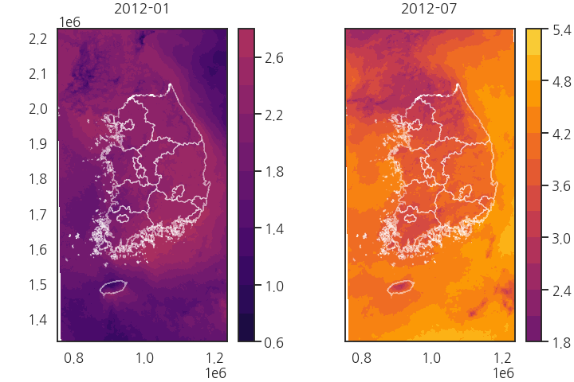
확실히 1월에 비해 7월의 햇살이 더 쨍쨍합니다.
5. 시간과 공간 데이터 시각화
- 공간 데이터는 1개월마다 평균치가 저장되므로 이를 늘어놓으면 시간에 따른 변화를 볼 수 있습니다.
- 2012년 1월부터 12월까지 공간데이터를 for 문을 사용해 반복합니다.
- 공통으로 적용된 colorbar는 12개 Axes의 우측에
ScalarMappable()을 사용해 놓습니다.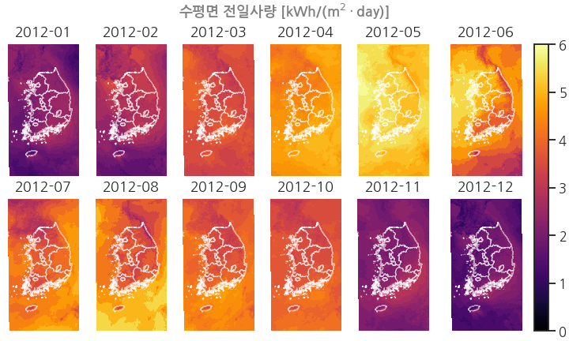1
2
3
4
5
6
7
8
9
10
11
12
13
14
15
16
17
18
19
20
21
22from matplotlib import cm
fig, axes = plt.subplots(ncols=6, nrows=2, figsize=(10, 6), constrained_layout=True, sharex=True, sharey=True)
axs = axes.ravel()
for i, ax in enumerate(axs, 1):
month = f"2012-{i:02d}"
df_shp.plot(ax=ax, fc="none", ec="w", lw=1, alpha=0.5, zorder=2)
im = ax.tricontourf(df_u["x"], df_u["y"], df_u[month], cmap="inferno", levels=10, vmin=0, vmax=6)
ax.set_aspect("equal")
ax.set_title(month, pad=10)
ax.set_xlim(df_u["x"].min(), df_u["x"].max())
ax.set_ylim(df_u["y"].min(), df_u["y"].max())
ax.axis(False)
# colorbar
cbar = cm.ScalarMappable(cmap="inferno")
cbar.set_clim(0, 6)
plt.colorbar(cbar, ax=axes[:,-1], fraction=0.2, pad=0.15)
# figure title
fig.suptitle("수평면 전일사량 [kWh/(m$^2 \cdot$day)]", color="gray", fontsize="medium", fontweight="bold")